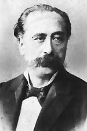

Տիգրան Չուխաջյան
 Տիգրան Չուխաջյանի ստեղծագործական գործունեությամբ հայ երաժշտության մեջ մի նոր էջ բացվեց, դրվեց ժամանակակից ազգային պրոֆեսիոնալ երաժշտության հիմքը: Նրա առաքելությամբ ժողովրդի բազմադարյան պատմության մեջ գործածության մեջ մտավ «հայ կոմպոզիտոր» հասկացությունը:
Ականավոր երաժշտին վիճակվեց ապրել և գործել Թուրքիայում, հետամնաց երկրի իրավազրկության պայմաններում: Դա կաշկանդում էր նրա նախաձեռնությունները, արգելակում գործունեության նորմալ ընթացքը:
Մեծ տաղանդի և մասնագիտական բարձր գիտելիքների տեր ստեղծագործող, կատարող, մանկավարժ, երաժշտական-հասարակական գործիչ Տ. Չուխաջյանն ինքնահսատատվեց որպես հայրենասեր արվեստագետ, դեմոկրատական իդեալների ջատագով: Մերձավոր Արևելքի արվեստում նոր ուղիներ նշագծող երաժիշտը զարթոնքի դարաշրջանի ամենապայծաո ներկայացուցիչներից էր, որի ջանքերով Արևելքի մի շարք ժողովուրդների համար բացվեց գեղարվեստական զարգացման մի նոր հնարավորություն: Տ. Չուխաջյանը աոաջինն էր, որ նպատակամետ ձևով միաձուլեց եվրոպական և արևելյան (հատկապես, հայկական-քաղաքային) երաժշտության ավանդույթները:
Աոաջին օպերաների և օպերետների, դաշնամուրային ստեղծագործությունների, երգերի և ռոմանսների հեղինակ Տ. Չուխաջյանը իր ստեղծագործությամբ նպաստել է ինչպես հայ, այնպես էլ թուրք ժողովուրդների երաժշտական լուսավորությանը: Դեռևս կոմպոզիտորի կենդանության օրոք նրա ստեղծագործությունները լայն տարածում ստացան Թուրքիայում, Եգիպտոսում և Հունաստանում: Նրա գործերը կատարվել են Իտալիայում, Ավստրիայում, Ֆրանսիայամ, իսկ ավելի ուշ՝ Անդրկովկասում: Տ. Չուխաջյանի ստեղծագործության իսկական ժառանգորդը Հայաստանն է, որտեղ առաջին անգամ իրականացավ «Արշակ Բ» օպերայի բեմադրությունը: Նրա ստեղծագործությունները դարձան գիտական ոաումնասիրության առարկա և լուսաբանվեցին հայ անվանի երաժշտագետների կողմից:
Անցյալում Բյուզանդական պետության հզորությունը մարմնավորող, Արևելք-Արևմուտք կամրջող, ժողովուրդների, լեզուների, կրոնների, ավանդույթների խաչաձևման յուրատիպ կենտրոնն էր Պոլիսը՝ Տիգրան Չուխաջյանի ծննդավայրը: Բազմազգ քաղաքում հնչում էին հայկական, թուրքական, հունական երգեր, հոգևոր հին մեղեդիներ, իսկ նրանց կողքին թատրոնի ու համերգասրահների բեմերում ելույթ էին ունենում իտալացի և ֆրանսիացի երգիչներ, բեմադրվում՝ արևմտաեվոոպական կոմպոզիտորների օպերաներ: Շուրջ քառորդ դար Պոլսում գործեց իտալացի ականավոր կոմպոզիտոր Ջ. Դոնիցետտին (Գաետանո Դոնիցետտիի եղբայրը):
Պոլսի հետ էին կապված ապագա երաժշտի մանկությունն ու պատանեկությունը, լարված գործունեության, անդուլ որոնումների, մեծ նվաճումների և դառն փորձությունների տարիները:
Պոլսում ստացած նախնական երաժշտական կրթությունը ի հայտ բերեց երիտասարդ երաժշտի ստեղծագործական օժտվածությունը, որն իր զարգացումը ստացավ Գ. Երանյանի, այնուհետև՝ իտալացի Մանձոնիի ղեկավարությամբ:
Ստեղծագործական, երաժշտական-հասարակական գործունեությունը, որը սկիզբ էր առել 50-ական թվականների երկրորդ կեսից, անմիջականորեն կապված էր «Քնար հայկականի» հետ, խթանեց Իտալիայում կրթությունը շարունակելու մտադրությունը:
Իտալիայի ողջ հոգևոր մթնոլորտը, երաժշտական հարուստ ավանդույթները վճռորոշ նշանակություն ունեցան երաժշտի գեղարվեստական սկզբունքների ամբողջացման գործում: Առանձնապես մեծ էր օպերային արվեստի, Վերդիի օպերաների նշանակությունը հայ երաժշտի համար: Վերդիի՝ ազգային-ազատագրական պայքարին համահունչ, սոցիալական խոր իմաստ ունեցող օպերաները հույժ արդիական արվեստի դպրոց էին:
Իտալական շրջանի դասերը, նոր լուսավորչական մղումները Տ. Չուխաջյանը ձգտում էր իրականացնել Պոլսում՝ համագործակցելով ժամանակի առաջադեմ գործիչներ Մ. Պեշիկթաշլյանի, Գ. Օտյանի, Ար. Հեքիմյանի, Ար. Պենկլյանի, Ն. Թաշչյանի հետ:
Պոլսի հայաբնակ շրջաններում որպես դաշնակահար և դիրիժոր հանդես գալով՝ իր ստեղծագործական աշխատանքը կոմպոզիտորը հիմնականում կապում էր թատրոնի հետ՝ երաժշտություն գրում Մաղաքյանի ղեկավարած Արևելյան թատրոնի ներկայացումների համար (Ռ. Սեթեֆչյանի «Վարդան Մամիկոնյան, փրկիչ հայրենյաց», Պ. Դուրյանի «Վարդ ու Շուշան» Ս. Տղլյանի «Մեծն Տրդատ և Գրիգոր Լուսավորիչը»):
Թատրոնի հետ անմիջական կապը, բեմադրվող ներկայացումների հայրենասիրական ուղղվածությունը, հասարակության ջերմ արձագանքը, վերջապես ազգային զարթոնքի ողջ մթնոլորտը, որը կրկնապատկվում էր իտալական տպավորություններով, ստեղծագործական նոր որոնումների ազդակ հանդիսացան: Թոմաս Թերզյանի «Արշակ Բ» գործը հիմք հանդիսացավ անդրանիկ օպերայի մտահաղացման համար: Ստեղծագործական եռանդով առլեցուն՝ նա 1868 թվին ավարտեց իր «Արշակ Բ» օպերան: Սակայն բեմադրության պատրաստ ներկայացումը Պոլսի «Նաում» թատրոնում չիրականացավ:
Կորցնելով ծավալուն օպերային կտավ բեմադրելու հույսը՝ Չախաջյանը տարվում Է ժամանակակից կենցաղը և բարքերը արտացոլող ժանրով: Այդպես կյանք ստացան «Արիֆ» (1873), «Քյոսե-Քեհյա» (1874), «Լեբլեբիջի» (1876) օպերետները, որոնք բեմադրվեցին Պոլսում հայ արտիստների ուժերով:
Իրեն հատուկ մեծ եռանդով Տ. Չուխաջյանը, իր շուրջը համախմբելով շնորհալի կատարողների, ստեղծեց մշտական գործող մի խումբ, որն անվանվեց «Գուսաներգական թատերախումբ»: Լեկոկի, Օֆենբախի, Չուխաջյանի օպերետների բեմադրությունը մեծ հետաքրքրություն առաջացրեց ինչպես Պոլսում, այնպես Էլ հատկապես Հունաստանում և Եգիպտոսում, որտեղ ներկայացումներն արտակարգ հաջողություն ունեցան: 80-ական թվականներին սուլթան Աբդուլ Համիդի արյունարբու բռնապետությունը անտանելի պայմաններ ստեղծեց ստեղծագործական աշխատանքի համար. արևմտահայ մշակույթի զարգացումը արգելակվեց:
Հունաստանում և Եգիպտոսում ունեցած հյուրախաղերի հաջողությունները հնարավորություն տվեցին միառժամանակ հեռանալ Թուրքիայի ճնշող, արվեստագետի արժանապատվությունը վիրավորող միջավայրից: Հարկադիր վերադարձը Պոլիս նոր դժվարությունների տեղիք Էր տալիս գործունեության բոլոր ոլորտներում:
Մշտական նյութական կարիքը և զրկանքները, խաղաղ ստեղծագործական աշխատանքի պահանջը կոմպոզիտորին ստիպեցին հեռանալ Թուրքիայից և 90-ական թվականների սկզբին հաստատվել Փարիզում, ուր նա մտադիր Էր բեմադրել «Զեմիրե» օպերան:
Փարիզյան տարիներին Չուխաջյանը իրեն բարձր գնահատող կովկասահայ ուսանողներից Թիֆլիս տեղափոխվելու հրավեր Է ստանում, սակայն խոլերայի համաճարակը Ռուսաստանում խանգարում Է այդ հրավերի իրականացմանը:
Կոմպոզիտորի կյանքի վերջին տարիներն անցան Իզմիրում (Զմյուռնիա), ուր նրա լարված մանկավարժական և կատարողական գործունեությունը ընդհատվեց ծանր հիվանդությամբ: Մինչև կյանքի վերջին պահը նա չի դադարել ստեղծազործել, ծանոթանալ նոր գործերի, որոնց թվում Էր և Վերդիի «Օթելլո» օպերայի պարտիտուրը:
Տիգրան Չուխաջյանը վախճանվել Է 1898 թվի մարտին, նյութական ծանր կացության մեջ: «Միշտ միևնույնը, - գրել Է կոմպոզիտորի մահվան առթիվ Թիֆլիսի «Մշակ» թերթը, - մահ՝ աղքատության մեջ և փառավոր թաղում»: